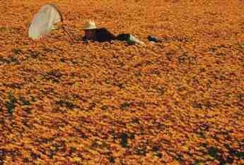

HERBÁØ PARANATURÁLNÍCH ROSTLINNÝCH DRUHÙ
autor: Tristan -Muru- Thorn
poslední aktualizace: 11.7.2066
sepsáno pro úèely Katedry Parabiologických Studíí na Petrohradské akademie,
ale celý text je mo¾né volnì ¹íøit s uvedením jména autora
ve¹keré informace jou poskytovány v dobré vùli, ¾e budou u¾iteèné, ale autor textu
NENESE ®ÁDNU ZODPOVÌDNOST za pøípadné problémy vzniklé jejich pou¾íváním
doplòující informace prosím posílejte na
TT.Muru@KPS.Pa.edu.ru
NEPRAVÉ KOPØIVY:
výskyt:
- rostou v¹ude tam kde i kopøivy obyèejné
poznávací znaky:
- vzrùst okolo 0.6m a¾ po 1,2
- tvar rostliny je shodný s klasickou kopivou pravou
- listy jsou zbarveny do hnìda, hoøèiènì oran¾ovì, nìkdy i èernì kvìtenství je typem shodné s pravou kopøivou, ale barevnì se pohybuje v odstínech fialové
pou¾ití a úèinky:
- Nepravé kopøivy obsahují velice intenzivní, ale zatím neprozkoumaný jed, který zpùsobuje praskání poko¾ky a svalové hmoty; i pøi kvalitní léèbì
je problém vyhnout se intenzivním zánìtùm a mokvajícím vøedùm
HØBITOVNÍK:
výskyt:
- v¹ude tam, kde roste i pravý bøeè»an
poznávací znaky:
- popínavá rostlina tvarem i zpùsobem ¾ivotního cyklu velmi podobná bøeè»anu,
narozdíl od nìj má ale schopnost pnout se velice rychle a jeho úpony jsou
velice silné. Listy jsou zbarveny støíbøitì nebo do ¹eda.
- rostlina je schopná èerpat ¾iviny jak z rotlinné tak z ¾ivoèi¹né hmoty
pou¾ití a úèinky:
Høbitovník je velice nebezpeèná rostlina, díky svému bì¾nému roz¹íøení i v
lidmi obývaných oblastech. Je schopný vymr¹tit své úpony ve zlomku vteøiny,
a tak snadno spoutat a pohltit svou obì», která je pak velkou silou drcena
a úpony z ní stahují hmotu, ke koøenùm høbitovníku.
ÈERNÁ ORCHIDEA:
výskyt:
- zatím nenalezena, ale na mr¹inách bv tropických oblastech
poznávací znaky:
- èernì zbarvený kvìt podobný lilii se zlatou bliznou
- nádherná omamná vùnì
- roste na mrtvolách
pou¾ití a úèinky:
- Pøi sebemen¹ím závanu vìtru nebo doteku uvolòuje pyl, který je ve stopovém mno¾ství afrodiziakální, ve vìt¹ím mno¾ství pùsobí jako silný uspávající jed.
ZLATÌNKA:

výskyt:
- moøská øasa zlatavé barvy rostoucí v oblastech zvlá¹tì zneèi¹tìných toxicými odpady
poznávací znaky:
- drobnolistá øasa zlaté barvy rostoucí cca 5 cm pod moøskou hladinou
- roste v oblstech, kde krom ní ne¾ije ve vodì -díky toxickému èi
radioaktivnímu zneèi¹tìní - nic jiného.
pou¾ití a úèinky:
Øasa má schopnost zbavovat moøskou vodu ¹irokého spektra toxinù, pohlcuje také
radioaktivní záøení, ani¾ by byla sama toxická èi radioaktivní.
Díky této schopnosti mù¾e ¾ít v oblastech s tak vysokým zneèi¹tìním, ¾e je
pbtí¾né se k ní dostat se zdravou kù¾í, játry, ¹títnou ¾lázou...
Su¹ená pod intenzivním UV záøením se pøemìòí na zdroj drogy schopné po po¾ití
zbavit tìlo toxinù, nebo a radioaktivity, které jsou vylouèeny za horeèek, zvracení
a prùjmù standardní cestou tìlního vyluèování.
TRIFID:
výskyt:
- experimentálnì v laboratoøích nìkterých korporací, je¾ se zabývají genetickými manipulacemi rostlin.
poznávací znaky:
- cca 3.5m vysoká rostlina v maximu
- koøeny vyrùstají ze tøí velice pevných stvolù, na nich¾ je usazen bulvovitý útvar, jakási ko¾natá hlíza s listy. Na hlízovitém "tìle" vyrùstá 1,5-1,5 dlouhý ¾ahavý "biè"
pou¾ití a úèinky:
Trifidi jsou schopni pomalého, klátivého, ale urputného pohybu pomocí tøí stvolù.
Zdá se, ¾e tìmito tøením stvoly o sebe jsou schopní si pøedávat zvukové signály,
ale teorie zatím nebyla prokázána.
Bulvovitý útvar "tìlo" je zdrojem velice kvalitního jedlého oleje, kterému se
nevyrovná, ¾ádný jiný. Díky vysoké energetické hodnotì by tento mohl být záchranou
pro hladovìjící lidstvo.
Trifidí "biè" obsahuje velice prudký jed, který je schopen zabít savce o velikosti
napø. krávy, bez vìt¹ího problému. Pokud trifid útoèí na èlovìka, v¾dy na hlavu.
Pokud jed nezabije, témìø v¾dy spùdobí bez vèasného lékaøského zásahu, trvalé
oslepnutí.
Trifidi, podobnì jako mnoho dal¹ích paranaturálních rostlin, mají v oblibì ¾iviny
získané z rozkládajícího se masa, do kterého zakoøeòují, ale staèí jim i kvalitní
hospodáøská pùda.
V "zajetí" jsou vìt¹inou zbavováni ¾ahavého "bièe"
NEPRAVÝ MÁK:
výskyt:
poznávací znaky:
pou¾ití a úèinky: